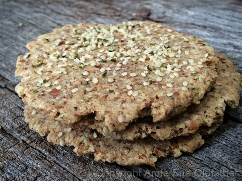
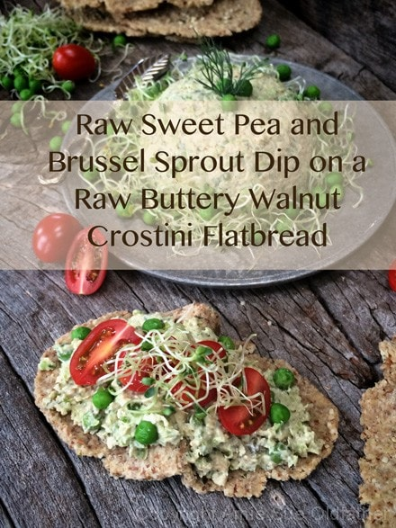

Sweet Pea and Brussels Sprout Dip Flatbread Tower
Make a statement at your next meal with this amazing tower of goodness! I can’t promise you that it is the easiest thing to eat, but it adds an incredible flair for any occasion. Even if it is just for you! Bringing joy to the table when you eat is very important. If you eat with anger, sadness or any other ill emotion in your heart, it will hinder your digestion process. Try to create a peaceful place for you to enjoy your meal, no distractions allowed. Turn off the TV, shut down the computer, light a candle and enjoy the feast before your eyes!

Ingredients:
yields 20 flatbreads (1/4 cup each)
Flatbread:
- 2 1/2 cups raw walnuts, soaked & dehydrated
- 1/2 cup ground golden flaxseed
- 1/4 cup hemp seed
- 1 tsp Himalayan pink salt
- 2 cups moist, packed almond pulp
- 1/2 – 1 cup water
Tower ingredients:
Preparation:
Flatbread:
- In the food processor, fitted with the “S” blade, process the walnuts down to a small cornmeal size. Be careful that you don’t over-process the walnuts; it will cause too much of the oils from the nuts to be released.
- Add the ground flax, hemp seeds, and salt. Pulse together and place in a medium-sized bowl.
- Add the almond pulp and 1/2 cup of water. Mix well with hands. If the batter feels too dry and crumbly, add a few more tablespoons until it is moist enough to stick together. I used 1 cup of water, but it depends on how much moisture is left in your almond pulp.
- To create the circular flatbread, make 1/4 cup-sized balls of dough. Place the dough ball on the teflex sheet or wax paper, covering it with another one. You can use a rolling-pin to flatten the dough out, but I just used a flat-bottomed bowl which is what I used. I pressed it down on the dough, and it created the perfect circle. Transfer to the mesh sheet.
- Sprinkle extra hemp seeds and coarse sea salt on top of each cracker.
- Dehydrate at 115 degrees (F) for 6-10 hours or until dry.
- Store in an air-tight container for 1-2 weeks.
Building the tower:
- Place a flatbread disc on a flat surface.
- Start layering by alternating with the Raw Sweet Pea and Brussel Sprout Dip, onion ring, fill the center with sprouts (letting them stick out), cherry tomatoes and repeat the process 3x. I would go any higher for fear of it toppling over. :)
- Eat right away and enjoy!

Raw Sweet Pea & Brussel Sprout Crostini

© AmieSue.com